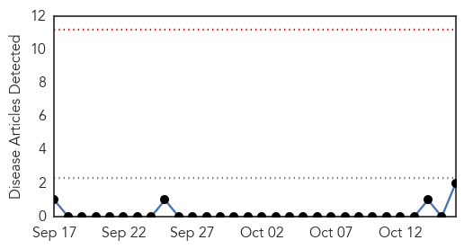
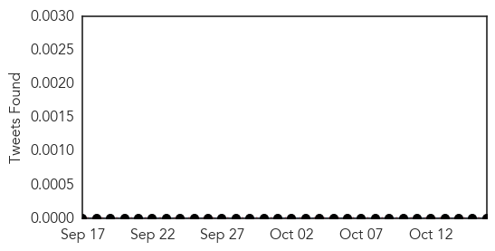
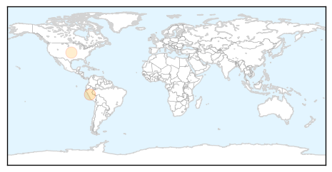

Bubonic Plague
30-Day Web Trend
0 alerts, 0 warnings

30-Day Twitter Trend
0 alerts, 0 warnings

Article Locations
Article Confidences

Top Articles:
Top Tweets:
-
No tweets found for Oct 16, 2015
Cholera
30-Day Web Trend
0 alerts, 2 warnings

30-Day Twitter Trend
3 alerts, 1 warnings

Article Locations

Article Confidences

Top Articles:
- 0.986
- Haiti’s Earthquake Was Devastating. The Cholera Epidemic Was Worse.
- 0.963
- S. Sudan marks Global Handwashing Day with calls for cholera fight
- 0.943
- Haitian Cholera Victims Demand Apology and Compensation from the United Nations
- 0.863
- Health Minister to Host Webcast from Geneva on Ebola
- 0.631
- Afropages : s-sudan-marks-global-handwashing-day-with-calls-for-cholera-fight
- 0.554
- About UNMISS
- 0.549
- Practice good hygiene to prevent diseases ahead El Nino, told
Top Tweets:
- 0.681
- RT: Faces and voices of UN cholera in Haiti, five years into the epidemic: https://t.co/3S5lP7u4oC